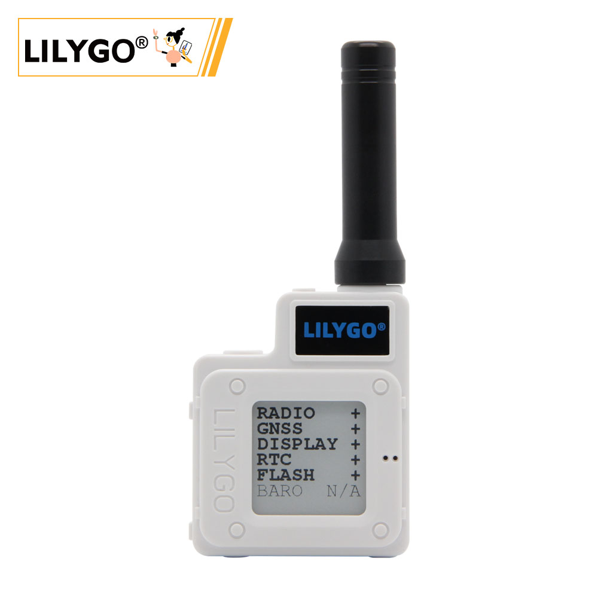
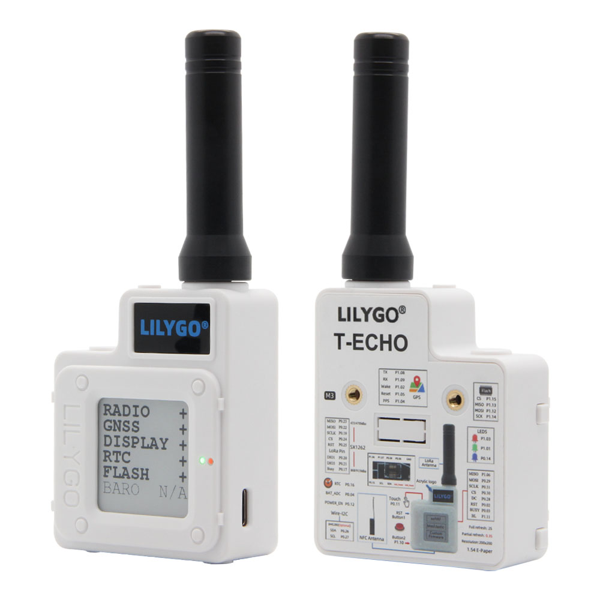
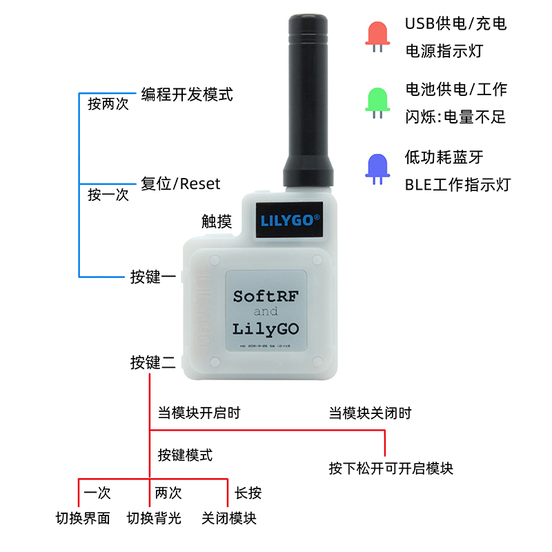
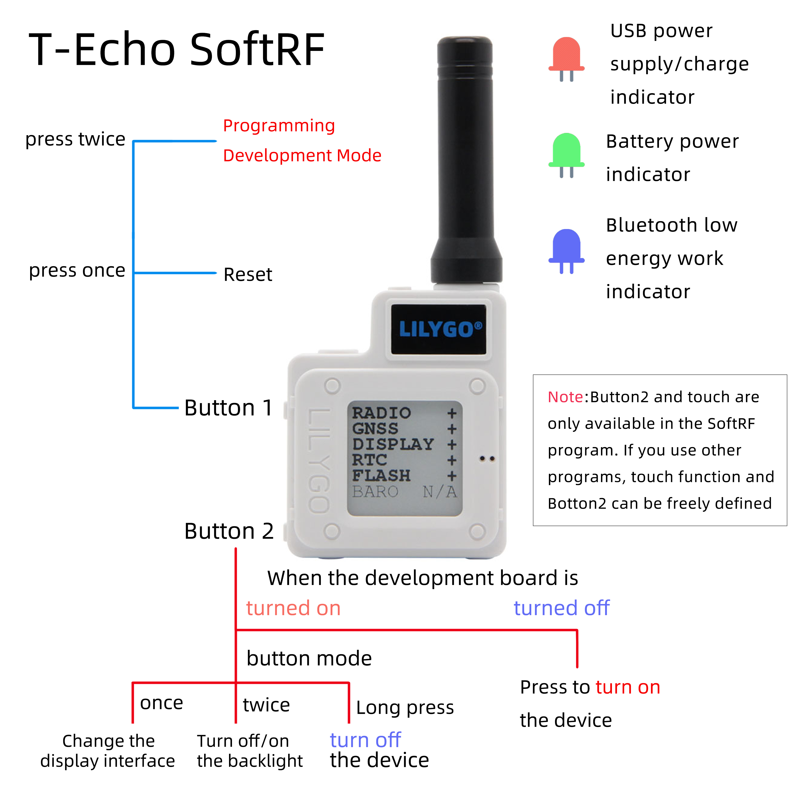
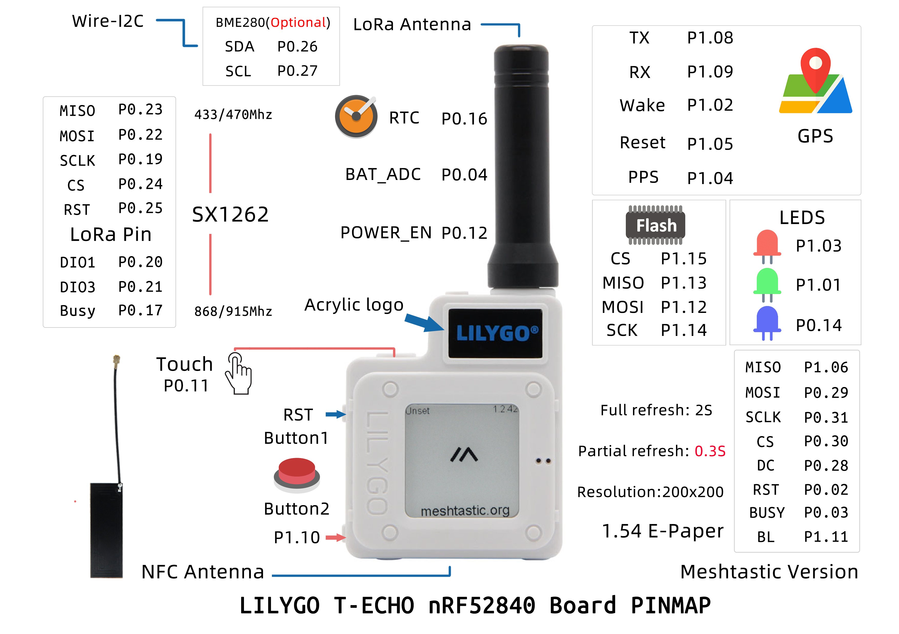
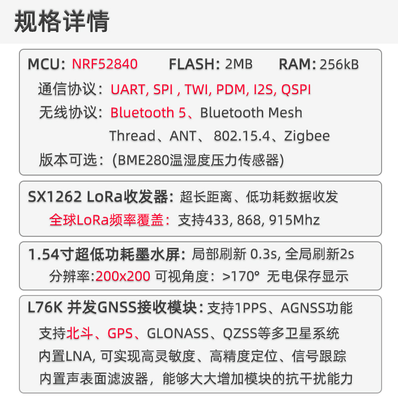
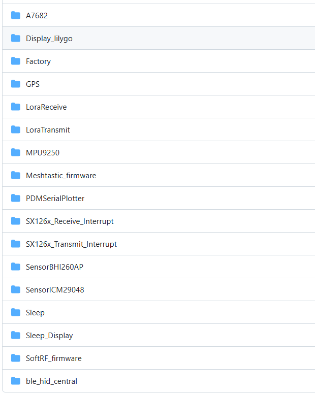

中文 简体
中文 简体LILYGO T-Echo

版本迭代:
| Version | Update date | Update description |
|---|---|---|
| T-Echo_V1.0 | 最新版本 | 多功能LoRa通信设备初始版本 |
购买链接
| Product | MCU | LoRa | Screen | GPS | NFC | Link |
|---|---|---|---|---|---|---|
| T-Echo | nRF52840 | SX1262 | E-Paper | 支持 | 支持 | 速卖通 |
目录
描述
T-Echo 是一款基于 nRF52840 芯片的多功能 LoRa 通信设备，集成了 E-Paper 屏幕、GPS 定位、NFC 功能和多种传感器。设备支持 Arduino 和 nRF5-SDK 开发环境，是开发 LoRa 通信、物联网节点和低功耗应用的理想平台。
T-Echo 兼容多个开源固件项目，包括 SoftRF 和 Meshtastic，可用于构建去中心化的通信网络。设备采用低功耗设计，支持多种省电模式，适合户外通信、环境监测等应用场景。
预览
实物图

应用示例



模块

MCU
- 芯片：nRF52840
- 架构：ARM Cortex-M4
- 无线：蓝牙 5.0
- FLASH：根据供货情况选择 MX25R1635FZUIL0 或 ZD25WQ16B
LoRa
- 芯片：SX1262
- 频率：支持多频段
- 输出功率：-17 到 22 dBm
屏幕
- 类型：E-Paper
- 特性：低功耗显示
GPS
- 功能：全球定位系统
NFC
- 功能：近场通信
传感器
- 类型：板载多种传感器
概述
| 组件 | 描述 |
|---|---|
| MCU | nRF52840 |
| LoRa | SX1262 芯片 |
| 屏幕 | E-Paper 显示屏 |
| GPS | 支持定位功能 |
| NFC | 支持近场通信 |
| 开发环境 | Arduino, nRF5-SDK |
| 开源固件 | SoftRF, Meshtastic 兼容 |
快速开始
示例支持
进入github仓库查看示例程序

Arduino IDE 开发
- 下载 Arduino IDE
- 打开首选项，添加
https://www.adafruit.com/package_adafruit_index.json到板安装管理器地址列表 - 打开板子安装管理器，等待索引更新完成，选择 'Adafruit nRF52 by Adafruit' 点击安装
- 安装完成后，在板子列表中选择 'Nordic nRF52840 (PCA10056)'
- 将 lib 目录中的所有文件夹拷贝到 Arduino 库文件夹中
- 打开草图，选择正确的端口，然后点击上传
PlatformIO 开发
- 安装 VS Code 和 Python
- 在 VS Code 扩展中搜索并安装 PlatformIO 插件
- 重启 VS Code 后，左下角会出现 PlatformIO 图标
- 点击文件 -> 打开文件夹 -> 选择 LilyGO-T-ECHO 文件夹
- 点击左下角 √ 编译，→ 上传
注意：使用 USB 下载固件时，需要双击复位按键进入 DFU 模式
nRF5-SDK 开发
- 下载 nRF5-SDK
- 使用 nRF5-SDK 进行编程，支持 NFC 等高级功能
开发平台
- Arduino IDE - 支持 Adafruit nRF52
- Platform IO - 跨平台开发
- nRF5-SDK - Nordic 官方 SDK
引脚总览
引脚定义请参考 utilities.h 文件。
注意事项
需要使用lib目录中的文件,它包括:
arduino-lmicAceButtonAdafruit_BME280_LibraryAdafruit_BusIOAdafruit_EPDAceButtonAdafruit-GFX-LibraryButton2GxEPDPCF8563_LibraryRadioLibSerialFlash_ID539SoftSPITinyGPSPlus
默认使用Adafruit_nRF52_Arduino,所有出厂已经烧录Adafruit_nRF52_Bootloader,如果使用nRF5-SDK对板子编程 将会丢失原先Bootloader
如果需要使用nRF5-SDK进行编程,请点击链接下载nRF5-SDK
Adafruit_nRF52_Arduino中不支持NFC功能,请用nRF5-SDK进行编程
FLASH将根据供货情况选择MX25R1635FZUIL0或者ZD25WQ16B。使用时注意区别。
设置 LoRa 输出功率后需要配置电流限制：
// 设置输出功率为 22 dBm（可接受范围 -17 到 22 dBm）
if (radio.setOutputPower(22) == RADIOLIB_ERR_INVALID_OUTPUT_POWER) {
Serial.println(F("Selected output power is invalid for this module!"));
while (true);
}
// 设置过流保护限制为 80 mA（可接受范围 45 - 240 mA）
// 注意：设置为 0 可禁用过流保护
if (radio.setCurrentLimit(80) == RADIOLIB_ERR_INVALID_CURRENT_LIMIT) {
Serial.println(F("Selected current limit is invalid for this module!"));
while (true);
}